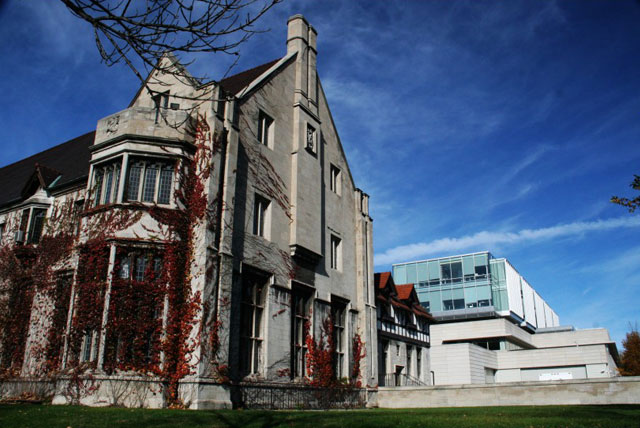
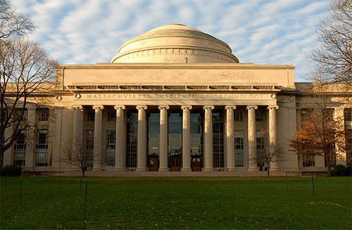
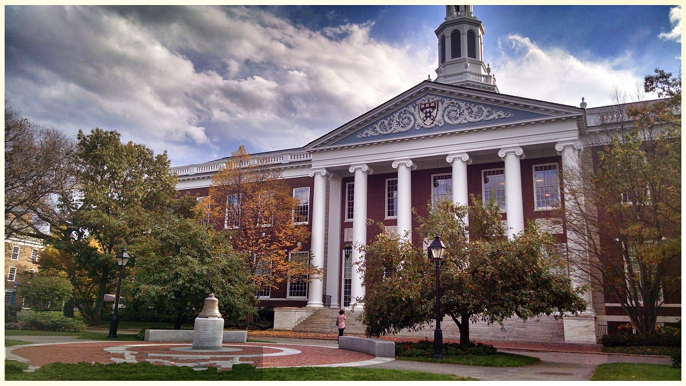
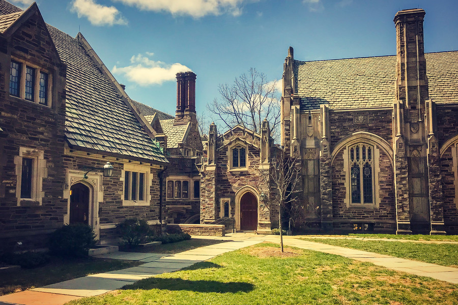
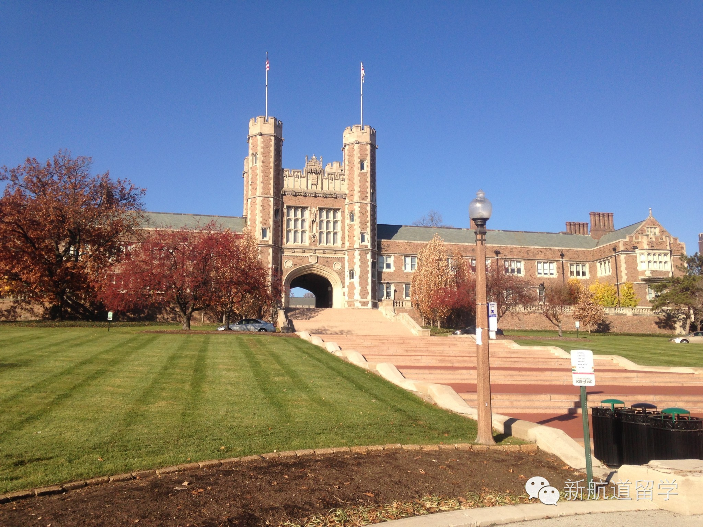
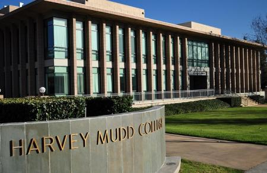
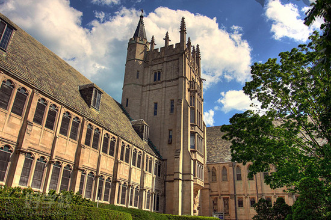
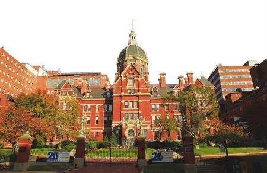
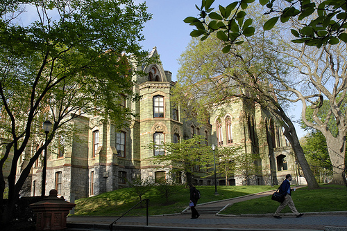

在SAT考试中考出一份理想的成绩并不容易，相信有不少准备出国留学的同学们对于2019年的美国高校SAT录取分数比较关心，小编今天为大家整理一下，希望能帮助大家!

1、芝加哥大学
芝加哥大学荣登榜首并不是那么让人惊讶。但是该校的平均SAT分数却与其他高校拉开了差距。
芝加哥大学创办于1890年，是一所私立研究型大学。
数据显示，该校录取和注册学生的SAT：
阅读部分成绩在720-800分之间，数学部分成绩在715分-800分之间，写作部分成绩在710-780分之间。
热门学科包括社会科学、生物及生物医药科学。
US News给出平均SAT分数：1520分

2、麻省理工学院
麻省理工学院成立于1861年，是当之无愧的美国工科最强者，也是工科人才的摇篮。
该校2015年收到18306份本科申请，录取人数为1519人，录取率为8%。新生中有9%是国际学生。
数据显示，该校录取和注册学生的SAT:
阅读成绩在680-770分之间，数学部分成绩在740分-800分之间，写作部分成绩在690-780分之间。
热门学科第一位当然是工程学，紧随其后的是计算机信息科学。
US News给出平均SAT分数：1481分
最新US News全美排名：2

3、哈佛大学
在中国知名度最高的美国大学恐怕就是哈佛。哈佛大学成立于1636年，是美国最古老的大学没有之一。
数据显示哈佛本科生超过7000人，给出的录取和注册学生SAT:
阅读部分成绩范围为700-800分，数学部分成绩范围为710-800分，写作部分成绩范围为720-800分。
热门学科包括社会科学、生物和生物医药工程、历史、数学。
US News给出平均SAT分数：1481分
最新US News全美排名：2

4、普林斯顿大学
普林斯顿大学似乎就不用过多堆砌其地位和头衔了，每年在US News榜单上压过哈佛一头的高校就是它。我们拿数据说话就好。
成立于1746年，2015-2016年本科生人数约为5277人。2016-2017学年录取率约为6.5%，国际学生在本科学生中占12%。
数据显示，录取和注册学生的SAT:
阅读成绩范围为690-800分，数学部分成绩范围为710-800分，写作部分成绩范围为700-800分。
热门学科包括社会科学、工程学、生物与生物医药科学、公共管理和社会服务类。
US News给出平均SAT分数：1480分
最新US News全美排名：1

5、圣路易斯华盛顿大学
以美国国父乔治·华盛顿命名的美国大学为数不少，圣路易斯华盛顿大学是其中最著名的一所。
根据数据，该校本科生将近7000人，最受欢迎的专业包括社会科学、工程学、商科、生物与生物医药科学。
数据显示，录取与注册学生的SAT:
阅读成绩在700-770分之间，数学部分成绩范围在720-800分之间，写作部分成绩在700-770分之间。
US News给出平均SAT分数：1475分
最新US News全美排名：19

6、哈维玛德学院
在这份各路大牌高校榜单上，哈维玛德学院也许是最不知名的高校了。但它可谓是精英摇篮。它的本科生只有800人，学院成立于1955年，历史并不悠久。
它常年被排入文理学院的排名，却也是一所工科牛校，在数学、科学和工程领域地位卓越。
这所学校毕业生收入非常高，在2012-2015年蝉联PayScale大学毕业生收入榜单第一名，2017年榜单排名第三位。
数据显示学生SAT:
阅读部分成绩范围为678-770分，数学部分成绩范围为740-800分，写作部分成绩范围为680-760分。
US News给出平均SAT分数：1471分
最新US News文理学院排名：21

7、西北大学
西北大学、正式建立于1851年，学校拥有8000多名本科生，6大本科学院，180多个系。西北大学是私立研究型大学。
数据显示，该校学生SAT
阅读部分成绩在690-770分之间，数学部分成绩在700-790分之间，写作部分成绩在690-770分之间。
西北大学最受欢迎的专业包括：传播、新闻与相关专业、社会科学、工程学、视觉与表演艺术、心理学。
US News给出平均SAT分数：1464分
最新US News全美排名：12

8、约翰·霍普金斯大学
约翰·霍普金斯大学成立于1876年，是著名的私立研究型大学。官网信息显示，该校2015级本科共收到24718分申请，录取3253人，录取率约为13%。
居中50%录取学生的SAT成绩在1420-1530分之间。
最受欢迎的专业包括：公共健康研究，国际研究、生物医药工程、神经系统科学、分子细胞生物学。
US News给出平均SAT分数：1464分
最新US News全美排名：10

9、宾夕法尼亚大学
宾夕法尼亚大学始建于1740年，同样是一所常青藤盟校。
申请入读2019届的数量总计有37268份，其中录取3787人，录取率约为10.2%。
学校官方给出的学生SAT成绩分布如下：
SAT阅读部分居中50%的成绩范围为：690-780分。
数学部分居中50%的成绩范围为：710-800分。
写作部分居中50%的成绩范围为：700-790分。
US News给出平均SAT分数：1457分
最新US News全美排名：8
10、布朗大学
作为老牌常青藤盟校和顶尖私立综合大学，成立于1764年的布朗大学培养了一大批人才。
以《哈利·波特》系列电影走红的赫敏角色扮演者艾玛·沃森就毕业于布朗大学。
截止到2015年11月，本科生的注册人数为6320人。2019届本科生的申请人数为30397人，录取2580人，录取率为8.5%。
热门学习领域依次为：自然科学、社会科学、生命科学、人文学科等。
US News给出平均SAT分数：1451分
最新US News全美排名：14